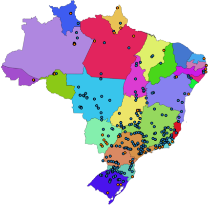
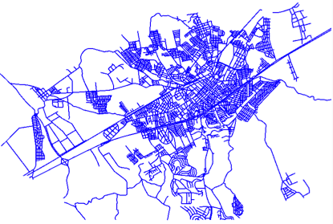
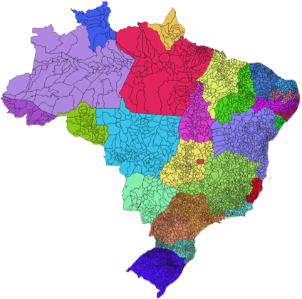

5.1. Introdução
A forma de modelar e representar os fenômenos geográficos no computador depende de sua percepção na forma de entidades discretas (objetos) ou campos contínuos.
Quando lidamos com fenômenos onde temos um valor definido para uma ou mais variáveis de observação em toda localização possível do espaço, estamos compreendendo tal fenômeno como um campo contínuo. Elevação, temperatura de superfície, risco de incêndio na vegetação, e radiância da superfície são exemplos de campos contínuos.
Quando percebemos o fenômeno em questão por objetos com fronteiras bem definidas e pertencentes a uma certa categoria, estamos compreendendo esse fenômeno como entidades discretas. Unidades de conservação estadual e federal, organização territorial, arruamento, trechos rodoviários, escolas, hospitais, linhas de transmissão de energia elétrica, são alguns exemplos de entidades discretas.
Para representar os dados dessas duas formas de conceitualização do espaço geográfico, em geral, utilizamos a representação matricial para fenômenos modelados como campos contínuos, e a representação vetorial para entidades discretas.
As entidades codificadas usando dados vetoriais são usualmente chamadas de feições (ou features). Nesse contexto, uma feição pode ser representada computacionalmente por diversas características, as quais chamamos de atributos da feição. Um atributo possui um nome, sendo associado a um determinado tipo de dado, como um número, uma sequência de caracteres (texto), ou uma data.
Além dos atributos alfanuméricos, uma feição é descrita por um ou mais atributos geométricos, associados a um tipo de dado geométrico. Um tipo de dado geométrico é capaz de representar elementos geométricos primitivos tais como pontos, linhas e polígonos ou coleções desses elementos.
A Tabela 5.1 apresenta alguns tipos de objetos geográficos representados por feições com representações geométricas de pontos (hidrelétricas e termoelétricas), linhas (logradouros) e polígonos (municípios brasileiros).
Hidrelétricas/Termoelétricas |
Logradouros |
Municípios |
|---|---|---|
 |
 |
 |
A Figura 5.1 ilustra o esquema de uma coleção de feições, onde podemos observar os atributos alfanuméricos e geométricos.

Figura 5.1 - Coleção de Feições (Feature Collection).
Repare que essa forma de representação, em geral, assume que todos os objetos da coleção possuem uma estrutura comum, a qual denominamos de esquema das feições. O esquema das feições é formado pelo conjunto de atributos usados para caracterizar as feições do conjunto. Além disso, cada atributo é associado a um tipo de dado. No caso da coleção mostrada na Figura 5.1 o esquema denominado unidades_federativas possui o seguinte conjunto de atributos:
ufid: código do IBGE, um número inteiro usado para identificar as unidades federativas.nome: nome da unidade federativa, uma string.populacao: total da população da unidade federativa, um número inteiro.e_vida: expectativa de vida, um número real.fronteira: limite da unidade federativa, representada por um tipo geométrico (MultiPolygon).
Atualmente existem inúmeros formatos para codificação de dados geoespaciais vetoriais: GeoJSON, GML, KML, ESRI Shapefile, Geomedia, Atlas BNA, entre outros. Além desses formatos de arquivo ainda encontramos dados geoespaciais armazenados e gerenciados por Sistemas Gerenciadores de Bancos de Dados (SGBD) como MySQL, PostgreSQL, IBM DB2, Oracle e Microsoft SQL Server. Outra forte tendência é a disponibilização de dados através de serviços Web, como o OGC WFS (Web Feature Service). Por conta disso, é importante usarmos tecnologias que nos abstraiam ao máximo dos detalhes de cada um desses formatos e sistemas.
Antes de começarmos a trabalhar com as coleções de feições, temos que compreender o modelo geométrico e as operações espaciais que permeiam as geotecnologias voltadas para manipulação de dados vetoriais.
Nota
As entidades codificados como dados matriciais, também chamadas de raster ou imagens, formam um plano subdividido em células de tamanho fixo, frequentemente chamadas de pixels. Para cada par de coordenada \((x, y)\) nesse plano há um valor de intensidade, por vezes chamado nível de cinza, que indica o valor de alguma medida para aquele ponto.
A Figura 5.2 apresenta uma imagem do satélite CBERS-4 sensor AWFI. Trata-se de um dado matricial em que cada célula, representa uma área de 64 metros \(\times\) 64 metros da superfície terrestre e o valor de intensidade indica uma aproximação da resposta espectral dessa superfície.
{kind=link}